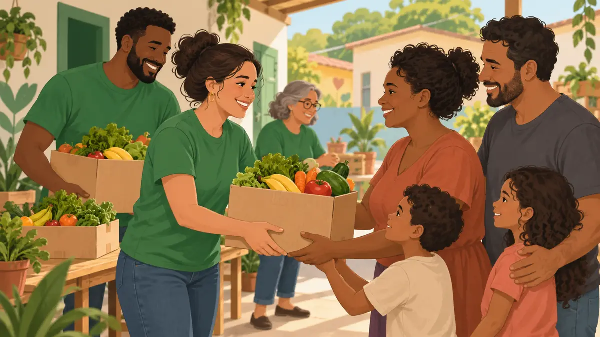
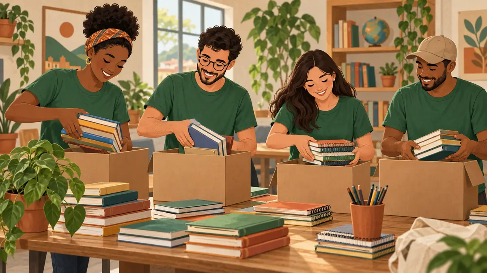

Campanha ativaAlimentação
Mesa Solidária
Alimentos e acolhimento para famílias da nossa comunidade.
FAÇA PARTE
Conheça nossas iniciativas e descubra como você pode colaborar.

Alimentos e acolhimento para famílias da nossa comunidade.

Leitura e apoio aos estudos para construir novos caminhos.
Quero participarSEU PRÓXIMO PASSO
Indique como gostaria de participar.
Use dados fictícios. Nenhum cadastro ou pagamento será realizado.